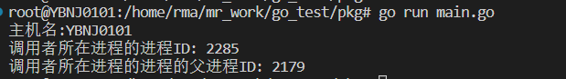
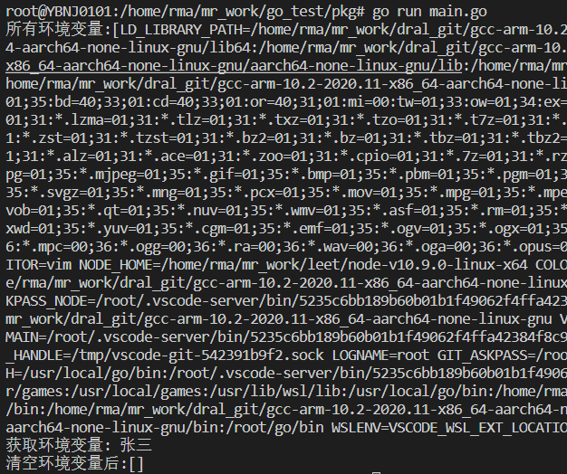
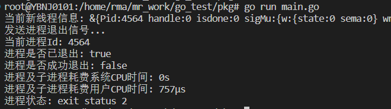
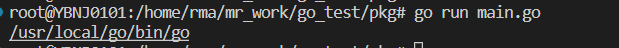
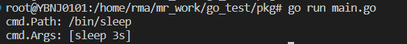
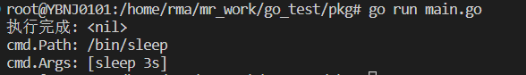
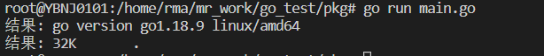
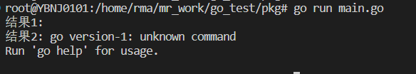

介绍
os包中提供了操作系统函数的接口，是一个比较重要的包。它的作用主要是在服务器上进行系统的基本操作，如文件操作、目录操作、执行命令、信号与中断、进程、系统状态等等。下面分模块归纳一些常用函数。
系统信息
函数列表
| 函数 | 功能 |
|---|---|
| Hostname() | 获取当前主机名 |
| Getpid() | 返回调用者所在进程的进程ID |
| Getppid() | 返回调用者所在进程的父进程的进程ID |
| Exit() | 让程序以状态码code退出。状态码0表示成功，非0表示出错。code取值范围： [0,125] |
代码示例
系统相关
1 | func main() { |
输出：

Exit
1 | func main() { |
输出：
环境变量
函数列表
| 函数 | 功能 |
|---|---|
| Environ() | 获取所有环境变量 |
| Setenv(key, value string) | 设置环境变量 |
| Getenv(key string) | 获取环境变量 |
| Clearenv() | 清空所有环境变量 |
代码示例
环境变量相关
1 | func main() { |
输出：

文件相关
关于文件相关的函数，参见之前的文章 go文件操作
进程相关
方法列表
| 函数名 | 功能 |
|---|---|
| os.StartProcess(..) (*Process, error) | 根据提供的参数创建一个新进程 |
| p.Signal(sig Signal) | 向进程发送一个信号 |
| p.Wait() | 阻塞到进程退出,返回类型*os.ProcessState |
| ps.Pid() | 返回一个已退出进程的id |
| ps.Exited() | 报告进程是否已退出 |
| ps.Success() | 报告进程是否成功退出，在Unix中状态码0代表退出。 |
| ps.SystemTime() | 退出进程及子进程耗费的系统CPU时间 |
| ps.UserTime() | 退出进程及子进程耗费的用户CPU时间 |
| ps.String() | 退出进程的状态信息 |
上表中p代表: *os.Process, ps代表: *os.ProcessState
代码示例
1 | func main() { |
输出:

执行命令
os/exec包执行外部命令。它包装了os.StartProcess函数以便更容易的修正输入和输出，使用管道连接I/O，以及其它的一些优化。
方法列表
| 函数名 | 功能 |
|---|---|
| LookPath(file string) (string, error) | 在环境变量PATH中搜索可执行文件 |
| (c *Cmd) Run() error | 执行c包含的命令，并阻塞直到完成 |
| (c *Cmd) Start() error | 执行c包含的命令即刻返回，但不会等待该命令完成。 |
| (c *Cmd) Wait() error | 会阻塞直到该命令执行完成,和Start()结合使用 |
| (c *Cmd) Output() ([]byte, error) | 执行命令并返回标准输出的切片 |
| (c *Cmd) CombinedOutput() ([]byte, error) | 执行命令并返回标准输出和错误输出合并的切片。 |
使用示例LookPath
1 | // 在环境变量PATH中搜索可执行文件 |
输出：

Run
1 | // 使用Run()执行命令 |
输出：

Start
1 | // 使用Start执行命令 |
输出：

Output
1 | // 执行命令并获取输出结果 |
输出：

CombinedOutput
1 | // 执行命令并返回标准输出和错误输出合并的切片 |
输出：
